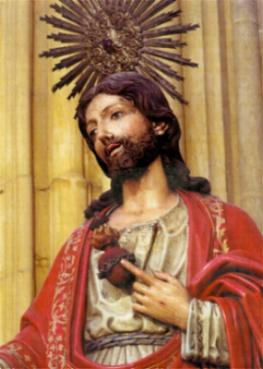

A palavra Justificar significa “Perdoar os Pecados” . Assim, a Justificação é o resultado da força de regeneração da Graça do ESPÍRITO SANTO, que atuando nas pessoas neutraliza todo efeito causado pelo mal, para curá-la do pecado e santificá-la para a vida. (Ef 2, 1-8)
Recebemos a Graça Santificante do ESPÍRITO SANTO em todos os Sacramentos. De modo especial, ela age no interior das pessoas purificando o coração e a alma, propiciando-lhes participarem dos benefícios de DEUS e da Vida Divina.
Pelas Graças recebidas no Sacramento do Batismo, obtém-se a Justificação, isto é, o perdão dos pecados e são infundidas na alma do batizando as Virtudes Teologais: a fé, a esperança e a caridade, além de conceder ao fiel o caráter sacramental de Filho de DEUS.
O Catecismo da Igreja acrescenta que, pela graça do Batismo "em nome do PAI e do FILHO e do ESPÍRITO SANTO" (Mt 28,19) somos chamados a compartilhar na vida da SANTÍSSIMA TRINDADE, aqui na terra, na obscuridade da fé, e para além da morte, na luz eterna.
a Justificação, isto é, o perdão de nossos pecados, nos foi merecida pela morte de NOSSO SENHOR na Cruz. JESUS, derramando o seu Sagrado Sangue no alto de um madeiro lavou a alma da humanidade de todas as gerações, neutralizando a influência nefasta do Pecado Original e perdoando os Pecados Subseqüentes cometidos até aquele dia. Esta realidade nos mostra a impressionante dimensão da Justificação, que é a obra mais excelente do amor de DEUS, manifestado em JESUS CRISTO e concedido a cada fiel pelo ESPÍRITO SANTO.
Por essa razão dizemos que a Justificação e a Conversão apresentam dois aspectos sob a ação da Graça: a pessoa se volta para DEUS e se afasta do pecado, acolhendo, dessa forma, o perdão e a justiça que vêm do alto.
Compreendemos assim que o perdão de nossos pecados é essencialmente Obra de DEUS, embora seja indispensável à colaboração de cada criatura pela fé, buscando o Sacramento, sinceramente arrependida de suas transgressões, conforme escreveu São Paulo aos Romanos:
"Tendo sido, pois, justificados pela fé, estamos em paz com DEUS por NOSSO SENHOR JESUS CRISTO, por quem tivemos acesso, pela fé, a esta Graça, na qual estamos firmes e nos gloriamos na esperança da glória de DEUS". (Rm 5, 1-2)
Isto porque, todos nós somos chamados à santidade, seja qual for o estado civil e o regime de vida, porque também todos os fieis são chamados à plenitude da vida cristã e à perfeição da caridade.
Assim sendo, a Justificação atua providenciando a remissão dos pecados, a santificação e a renovação do interior da pessoa, “destruindo o homem velho pelo pecado e fazendo nascer um homem novo para uma vida em DEUS”. (Ef 4, 22-24)
A primeira obra da graça do ESPÍRITO SANTO é a conversão que opera a justificação segundo o anúncio de JESUS no princípio do Evangelho escrito por São Mateus: "Arrependei-vos(convertei-vos), porque está próximo o Reino dos Céus"(Mt 4,17). Sob a moção da Graça, o homem se volta para DEUS e se afasta do pecado, acolhendo, assim, o perdão e a justiça Divina. Em conseqüência, conforme mencionamos acima: "a justificação abrange a remissão dos pecados, a santificação e a renovação do homem interior."(Catecismo da Igreja)
Por outro lado, a salvação é também um dom da Graça de DEUS, mas que somente podemos recebê-la em resposta à nossa fé, ou seja, se temos a convicção de que vamos alcançá-la.
Para compreender corretamente o processo da salvação, precisamos entender que “a fé em JESUS CRISTO é a única condição prévia que DEUS requer para a salvação de uma pessoa”. Isto porque, a fé não é somente uma confissão a respeito de CRISTO, mas é também uma ação dinâmica, que brota do coração do crente que acredita e quer seguir a CRISTO como o NOSSO SENHOR e como nosso SALVADOR. (Mt 4,19) (Mt 16, 24) (Lc 9,23-25) (Jo 10, 4) (Jo 10, 27) (Jo 12, 26).
As pessoas justificadas vivem a sua fé
na palavra de CRISTO: “Pois a fé vem da pregação e a pregação é pela Palavra de CRISTO”.
(Rm 10, 17) E ela age pelo amor, conforme
São Paulo escreveu na carta aos Gálatas:
“Pois, em CRISTO JESUS, nem a circuncisão tem valor, nem a incircuncisão, mas
a fé agindo pela caridade (ou seja,
pelo amor). (Gl 5, 6) Porque o amor é fruto do ESPÍRITO SANTO: “Mas o fruto do ESPÍRITO é amor”... (Gl 5, 22).
Entretanto, devemos lembrar que a força do
poder, a cobiça e a ambição atribulam a existência das pessoas no cotidiano
(Rm 8, 35-39) e fazem com que elas caiam em pecado (1 Jo 1, 8.10), necessitando
repetidamente de ouvirem as recomendações Divinas e a confessarem as suas
transgressões. (1 Jo 1, 9). Isto porque, só assim poderão participarem dignamente da
Sagrada Eucaristia e serem exortadas a viverem uma vida justa, em conformidade com a
vontade de DEUS. Por isso o Apóstolo diz às pessoas justificadas: "Desenvolvei vossa salvação com temor e tremor;
porque é DEUS quem opera em vós tanto o querer quanto o realizar, segundo a sua
vontade" (Fl 2, 12).
E permanece a boa notícia: "Não existe nenhuma condenação para aqueles que estão em CRISTO JESUS" (Rm 8, 1).
Foi por intermédio da obra admirável e justa de CRISTO que gerou a justificação que dá vida para todos os seres humanos. (Rm 5, 18)
RELACIONAMENTOS DA GRAÇA
Graça e Justificação
– “A Justificação é um ato livre de DEUS que perdoa 
Como exemplo, relembramos o benefício recebido pelo “bom ladrão” na cruz. No último momento de sua vida conseguiu a salvação, apesar de uma existência de crimes e de pecados. Na condição de crucificado ao lado de JESUS, reconheceu o SENHOR como o Verdadeiro Messias através de suas palavras, atestando a sua fé e assim, alcançou a Graça de DEUS e foi justificado.
A paga pelo débito eterno, ou seja, o perdão pelos pecados mortais cometidos, foi justificada por CRISTO na Cruz, que estendeu o seu sacrifício a toda humanidade. (Rm 3, 24) (Rm 5, 18-19)
Graça e Redenção - O desejo do PAI ETERNO de redimir a humanidade ficou manifesto na citação de São João: “Pois DEUS amou tanto o mundo que entregou o seu FILHO Único, para que todo o que NELE crer não pereça, mas tenha a Vida Eterna”, (Jo 3.16) e primordialmente, pela realização do sacrifício de JESUS na Cruz, com sua entrega decidida e voluntária. (Gl 2.20; Ef 5.2)
Graça e Purificação – A graça capacita o fiel a afastar-se do mal
e procurar viver com dignidade, trilhando o caminho do bem, da justiça
e do amor fraterno.
São Lucas apresenta em (Lc 11, 24-26) uma ilustração feita por JESUS,
em que ELE coloca o assunto de um modo bem claro e acessível, falando
a respeito de uma “casa” que foi
“varrida e adornada”. A
“casa”
simboliza o corpo humano, a morada de DEUS a partir da conversão da pessoa (1 Co
3,16), “varrida” significa limpa, isenta de toda imundícia que
acumulava pelos pecados cometidos e
“adornada”, refere-se a um estado
que excede a simples “limpeza”
, que faz com que esta “casa”
se torne mais bela do que efetivamente era através de uma purificação,
que no nosso caso abrange um aspecto essencialmente espiritual.
JUSTIFICAÇÃO COMO PERDÃO DOS PECADOS E ATO DE TORNAR JUSTO
DEUS, por sua Graça, perdoa o pecado do ser humano, e ao mesmo tempo o liberta do poder do maligno, dando-lhe oportunidade de ter uma nova vida em CRISTO. Quando o ser humano cultiva a fé acreditando em NOSSO SENHOR JESUS, DEUS perdoa os seus pecados e, pelo ESPÍRITO SANTO, infundi nele um amor ativo.
Ambos os aspectos da ação da Graça Divina não devem ser separados. Eles estão correlacionados de tal maneira que o ser humano, através da fé está unido a CRISTO e é justamente pela Vontade de DEUS PAI que JESUS se tornou para nós tanto o perdão dos pecados quanto a presença santificadora do próprio DEUS.
“Ora, é por ELE que vós sois em CRISTO JESUS, que se tornou para nós sabedoria proveniente de DEUS, justiça, santificação e redenção”,(1 Cor 1, 30)
No Sacramento do Batismo o ESPÍRITO SANTO une o batizando a CRISTO, justifica e realmente o renova. Não obstante, a pessoa estar justificada pelo Sacramento, durante toda a vida permanece dependente da Graça de DEUS que sempre o justifica em todas oportunidades, de modo incondicional. Isto porque o fiel está também continuamente exposto ao poder do pecado e das investidas do maligno, não estando isento da terrível luta cotidiana entre o “bem” e o “mal” que faz oposição a DEUS.
“Portanto, que o pecado não impere mais em vosso corpo mortal, sujeitando-vos às suas paixões, nem entregueis vossos membros, como armas de injustiça, ao pecado; pelo contrário, oferecei-vos a DEUS como vivo provindos dos mortos e oferecei vossos membros como armas de justiça a serviço de DEUS. E o pecado não vos dominará, porque não estais debaixo da Lei, mas sob a Graça”. (Rm 6, 12-14)
A pessoa justificada precisa pedir, todos os dias, o perdão de DEUS e deve se conscientizar que é chamada constantemente à conversão e ao arrependimento de suas transgressões, recebendo continuamente o perdão Divino.
“Se confessarmos nossos pecados, ELE é fiel e justo: para perdoar os nossos pecados e purificar-nos de toda iniqüidade”. (1 Jo 1, 9)
O ser humano é justificado na sua fé no evangelho "independentemente das obras da lei" (Rm 3, 28). JESUS cumpriu a lei e, por sua morte e ressurreição, a superou como caminho para a salvação. Da mesma forma que os mandamentos de DEUS permanecem em vigor para a pessoa justificada, CRISTO, em sua palavra e sua vida, expressa a vontade de DEUS e constitui padrão de conduta e exemplo a ser imitado pela humanidade justificada de todas as gerações.